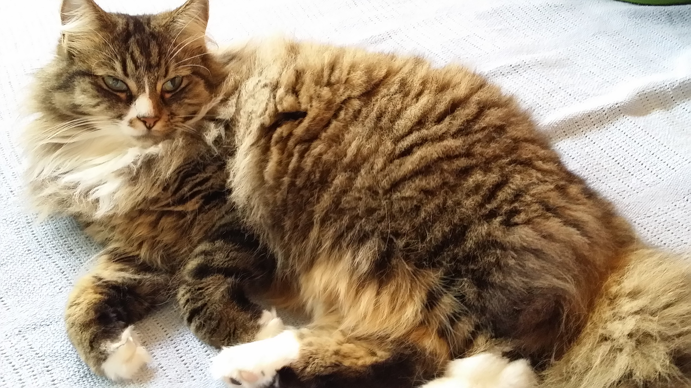

Where I live
I live in Lyall Bay in Wellington and have since 1996 when I moved here from Juneau, Alaska. Happy to be a Kiwi since 2011.
Family Life
I live with my husband, John and my 14 year old son, Evan and our very furry cat.....Shyla.
Why Dev Academy?
Have been looking at the Dev Academy website off and on for 6 months wanting to take the plunge and learn new skills. So, finally did. Hope to one day work with a team of developers and also do some contract work as well.